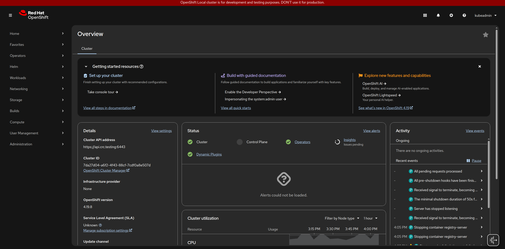
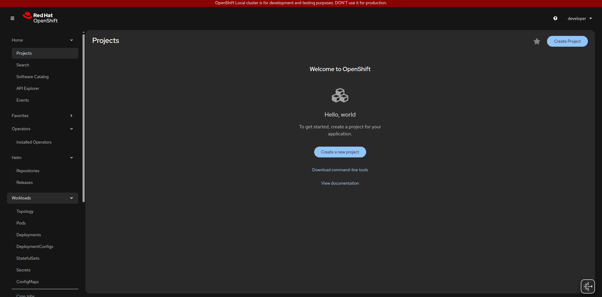
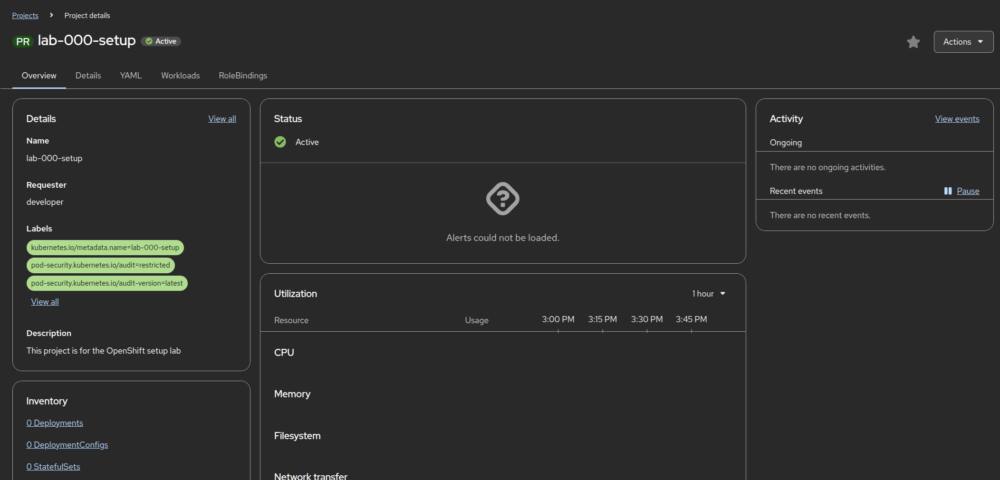
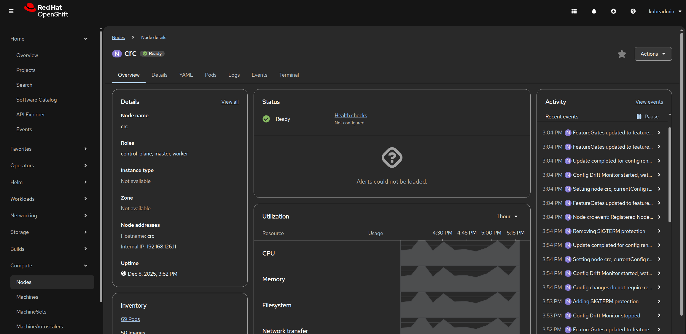

OpenShift Labs
About OpenShift
Red Hat OpenShift is an enterprise-ready Kubernetes container platform that provides a complete application platform for developing and deploying containerized applications. Built on proven open-source technologies, OpenShift extends Kubernetes with developer and operations-centric tools that enable:
- Automated Operations: Streamlined installation, upgrades, and lifecycle management
- Developer Productivity: Integrated CI/CD pipelines, source-to-image builds, and developer workflows
- Enterprise Security: Built-in security scanning, policy enforcement, and compliance controls
- Hybrid Cloud Flexibility: Consistent experience across on-premises, public cloud, and edge environments
Learning Path Overview
This structured curriculum takes you from initial cluster setup through advanced operational practices. Each lab builds upon previous concepts, providing a progressive learning experience suitable for developers, operators, and architects who want to master OpenShift.
What You’ll Learn
Throughout these tutorials, you’ll gain practical experience with:
- Infrastructure Management: Cluster setup, health verification, and resource management
- Identity & Access: User management, RBAC configuration, and project isolation
- Application Deployment: Container lifecycle, build strategies, and deployment patterns
- CI/CD Integration: Automated pipelines, webhooks, and continuous delivery workflows
- Networking & Exposure: Services, routes, ingress controllers, and load balancing
- Operations & Observability: Monitoring, logging, alerting, and autoscaling
Hands-On Labs
| Lab | Topic | Description |
|---|---|---|
| 000-Setup | Getting Started | Initial OpenShift cluster setup and accessing the web console |
| 001-Verify-Cluster | Health & Status | Verify cluster health, check nodes, operators, and resource availability |
| 002-New-User | Identity Management | Creating and managing users, roles, and RBAC configurations |
| 003-New-Project | Resource Isolation | Creating namespaces/projects with resource quotas and limits |
| 004-Docker-Lifecycle | Container Basics | Building, tagging, pushing, and managing local Docker images |
| 005-Docker-Pipeline | CI/CD Foundations | Building automated pipelines from source code to container images |
| 006-Hooks-Setup | Automation Triggers | Configuring Git hooks, build hooks, and webhooks for CI triggers |
| 007-Images-ImageStream | Image Management | Working with BuildConfigs, ImageStreams, and registry interactions |
| 008-Deploying | Deployment Strategies | Understanding Deployments vs DeploymentConfigs, scaling and rollouts |
| 009-Services-Routes | Network Exposure | Exposing applications using Services, Routes, and Ingress controllers |
| 010-Monitoring | Observability | Implementing monitoring and alerting with Prometheus and Grafana |
| 011-Logging | Log Aggregation | Centralized logging with EFK/ELK stack for troubleshooting and analysis |
| 012-Scaling | Performance Tuning | Horizontal Pod Autoscaling (HPA) and manual scaling strategies |
Prerequisites
Before starting these labs, ensure you have:
- Access to an OpenShift cluster (CRC, cloud provider, or on-premises installation)
- Basic understanding of container concepts and Kubernetes fundamentals
How to Use These Labs
Each lab is self-contained and includes:
- Learning Objectives: Clear goals for what you’ll accomplish
- Prerequisites: Required knowledge and completed previous labs
- Step-by-Step Instructions: Detailed commands with explanations
- Validation Steps: How to verify successful completion
- Troubleshooting Tips: Common issues and solutions
We recommend following the labs sequentially, as concepts and configurations build upon each other. However, experienced users may skip to specific topics of interest.
Ready to begin? Start with Lab 000: Setup to configure your OpenShift environment.
Tutorials
Lab 000: Installation and Initial Setup
Overview
This lab guides you through setting up OpenShift Local (CRC), installing the oc CLI tool, and creating your first project. \
We’ll learn how to use both the web console and command-line interface.
Learning Objectives
- Install and start OpenShift Local (CRC)
- Install the
ocCLI tool - Access the web console
- Create your first project
Prerequisites
System Requirements:
- Operating System: Linux
- RAM: Minimum 9 GB RAM (16 GB recommended)
- CPU: 4 virtual CPUs minimum
- Disk Space: 35 GB of free disk space
- Virtualization: Hardware virtualization enabled in BIOS with KVM support
Software Prerequisites:
- Administrator/root access on your machine
- A Red Hat account (free to create at https://www.redhat.com)
- Internet connection for downloads
- Web browser (Chrome or Firefox)
Lab Instructions
Step 1: Install OpenShift Local (CRC) And Get Pull Secret
- Create a free Red Hat account at https://www.redhat.com
- Visit https://console.redhat.com/openshift/create/local
-
Download your pull secret (JSON file) - you’ll need this during setup
-
Download Linux version of OpenShift Local (CRC) from the same page
-
Extract and install:
cd ~/Downloads # Navigate to Downloads
tar -xvf crc-linux-*.tar.xz # Extract the tarball
cd crc-linux-*-amd64 # Change to extracted directory
sudo cp crc /usr/local/bin/ # Copy crc binary to /usr/local/bin
- Verify installation:
Expected output:
- Run setup:
Expected output:
Step 3: Start OpenShift Local
- Start CRC (takes 10-15 minutes on first run):
Note: To allocate more resources (recommended 12 GB RAM, 6 CPUs), \ use: -crc config set memory 12288 && crc config set cpus 6
Expected output:
INFO All operators are available. Ensuring stability...
INFO Operators are stable (2/3)...
INFO Operators are stable (3/3)...
INFO Adding crc-admin and crc-developer contexts to kubeconfig...
Started the OpenShift cluster.
The server is accessible via web console at:
https://console-openshift-console.apps-crc.testing
Log in as administrator:
Username: kubeadmin
Password: 9eXcY-tIBcC-2UsDp-NPW5H # save this password!
Log in as user:
Username: developer
Password: developer
Use the 'oc' command line interface:
$ eval $(crc oc-env)
$ oc login -u developer https://api.crc.testing:6443
- Save the credentials from the output:
- Web console:
https://console-openshift-console.apps-crc.testing - Admin: username
kubeadmin, password shown in output -
Developer: username
developer, passworddeveloper -
Verify it’s running:
Expected output:
Step 4: Install the oc CLI Tool
Add CRC’s oc to your PATH:
eval $(crc oc-env) # Add to current session
echo 'eval $(crc oc-env)' >> ~/.bashrc # Persist for future sessions
source ~/.bashrc # Reload bashrc
Verify:
Expected output:
crc status
CRC VM: Running
OpenShift: Running (v4.19.8)
RAM Usage: 6.965GB of 16.76GB
Disk Usage: 29.57GB of 106.8GB (Inside the CRC VM)
Cache Usage: 30.09GB
Cache Directory: /home/user/.crc/cache
Step 5: Log in to OpenShift via CLI
Log in as developer:
Expected output:
Login successful.
You don't have any projects. You can try to create a new project, by running
oc new-project <projectname>
Verify your login:
Expected output:
Step 6: Access the Web Console
- Open your browser and navigate to:
https://console-openshift-console.apps-crc.testing - Accept the SSL certificate warning (safe for local development)
- Log in as
developer/developer - You’ll see the OpenShift web console home page

Step 7: Create Your First Project
- Click Home → Projects → Create Project

- Fill in the details:
- Name:
lab-000-setup -
Display name:
Getting Started with OpenShift(optional) -
Click Create
You’ll see now be in your new project context.
Step 8: Project Details
Understanding Project Tabs
Once your project is created, you’ll see several tabs:
| Tab | Purpose |
|---|---|
| Overview | Dashboard showing project status, recent activity, and alerts |
| Details | Project metadata: name, labels, annotations, requester |
| YAML | Raw YAML definition of the project resource (editable) |
| Workloads | Lists all workloads (Pods, Deployments, etc.) in this project |
| RoleBindings | Manage who has access to this project and with what permissions |

Note: The Overview tab is your go-to for quick health checks. Use RoleBindings when you need to share project access with teammates.
Managing OpenShift Local (CRC)
Useful commands:
crc stop # Stop the cluster
crc start # Start the cluster
crc status # Check cluster status
crc delete # Delete the cluster (removes all data)
crc console --credentials # View login credentials
crc console # Open console in browser
Troubleshooting
Virtualization errors during setup:
# Install KVM (Ubuntu/Debian)
sudo apt install qemu-kvm libvirt-daemon libvirt-daemon-system
sudo usermod -aG libvirt $USER
sudo systemctl restart libvirtd
# Log out and back in
Can’t access web console:
- Verify CRC is running:
crc status - Check
/etc/hostshas CRC entries:cat /etc/hosts | grep crc.testing - Accept SSL certificate warning in browser
oc command not found:
Performance issues:
- Ensure 9GB+ RAM available
- Increase resources if needed:
Quick Reference
# CRC Management
crc start # Start OpenShift Local
crc stop # Stop the cluster
crc status # Check cluster status
crc console --credentials # Show login credentials
# oc CLI
eval $(crc oc-env) # Add oc to PATH
oc login -u developer -p developer https://api.crc.testing:6443 # Log in as developer
oc whoami # Current user
oc get nodes # List nodes
oc get projects # List projects
oc new-project my-project # Create project
Next Steps
Continue to Lab 001: Verify Cluster to learn about cluster health monitoring.
Lab 001: Verify Cluster Health
Overview
This lab covers detailed cluster health verification including node status, cluster operators, core namespaces, events monitoring, and container runtime checks using both CLI and web console.
Prerequisites
- Completed Lab 000: Installation and Initial Setup
- OpenShift Local (CRC) running
ocCLI tool installed and configured- Logged in as
developerorkubeadmin
Lab Instructions
Step 1: Check Node Health
In Lab 000, you verified basic connectivity with oc get nodes. Now let’s examine node health in detail:
Expected output:
NAME STATUS ROLES AGE VERSION INTERNAL-IP EXTERNAL-IP OS-IMAGE KERNEL-VERSION CONTAINER-RUNTIME
crc Ready control-plane,master,worker 5d v1.xx.x 192.168... <none> ... ... cri-o://...
Node Status Indicators:
| Status | Description |
|---|---|
| Ready | Node is healthy and accepting workloads |
| NotReady | Node has issues and cannot accept new workloads |
| SchedulingDisabled | Node is cordoned (administrative action) |
Get detailed node information:
This shows:
- Node conditions (Ready, MemoryPressure, DiskPressure, PIDPressure)
- Allocatable resources (CPU, memory, pods)
- System information (OS, kernel, container runtime)
- Resource usage
Step 2: Check Cluster Operators
Cluster operators manage core OpenShift components. Verify all are healthy:
Expected output (sample):
NAME VERSION AVAILABLE PROGRESSING DEGRADED SINCE MESSAGE
authentication 4.x.x True False False 5d
cloud-credential 4.x.x True False False 5d
cluster-autoscaler 4.x.x True False False 5d
config-operator 4.x.x True False False 5d
console 4.x.x True False False 5d
dns 4.x.x True False False 5d
etcd 4.x.x True False False 5d
image-registry 4.x.x True False False 5d
ingress 4.x.x True False False 5d
kube-apiserver 4.x.x True False False 5d
kube-controller-manager 4.x.x True False False 5d
kube-scheduler 4.x.x True False False 5d
monitoring 4.x.x True False False 5d
network 4.x.x True False False 5d
node-tuning 4.x.x True False False 5d
openshift-apiserver 4.x.x True False False 5d
openshift-controller-manager 4.x.x True False False 5d
openshift-samples 4.x.x True False False 5d
operator-lifecycle-manager 4.x.x True False False 5d
operator-lifecycle-manager-catalog 4.x.x True False False 5d
operator-lifecycle-manager-packageserver 4.x.x True False False 5d
service-ca 4.x.x True False False 5d
storage 4.x.x True False False 5d
Status Columns:
| Column | Meaning |
|---|---|
| AVAILABLE | Operator is functional and serving requests |
| PROGRESSING | Operator is rolling out changes or updates |
| DEGRADED | Operator has errors or partial functionality |
Check for any degraded operators:
If all operators are healthy, only the header line appears.
Get details on a specific operator:
Step 3: Verify Core Namespaces
List all namespaces to ensure core components are present:
Expected output includes these core namespaces:
NAME STATUS AGE
default Active 5d
kube-node-lease Active 5d
kube-public Active 5d
kube-system Active 5d
openshift Active 5d
openshift-apiserver Active 5d
openshift-authentication Active 5d
openshift-console Active 5d
openshift-controller-manager Active 5d
openshift-dns Active 5d
openshift-etcd Active 5d
openshift-image-registry Active 5d
openshift-ingress Active 5d
openshift-kube-apiserver Active 5d
openshift-kube-controller-manager Active 5d
openshift-kube-scheduler Active 5d
openshift-monitoring Active 5d
openshift-network-diagnostics Active 5d
openshift-operator-lifecycle-manager Active 5d
Check pods in critical namespaces:
oc get pods -n openshift-kube-apiserver
oc get pods -n openshift-etcd
oc get pods -n openshift-ingress
All pods should be in Running status.
Step 4: View Cluster in Web Console
- Open the web console:
https://console-openshift-console.apps-crc.testing - Log in as
kubeadmin(use admin credentials from Lab 000) - Navigate to Home → Overview
The Overview dashboard shows cluster information and status.
- Click Compute → Nodes → crc
This shows detailed node information including:
- Running pods
- Node conditions
- Events

Step 5: Check Cluster Events
View recent cluster events:
This shows the last 20 events across all namespaces, useful for identifying recent issues.
Filter for warning/error events:
Step 6: Verify Container Runtime
Check that the container runtime is functioning:
This starts a debug pod on the node. Once inside:
chroot /host # Access the host filesystem
crictl version # Check crictl version
crictl ps | head -10 # List running containers
exit
exit
This verifies CRI-O (the container runtime) is working and shows running containers. \ The role of CRI-O is to manage container lifecycle on the node.
Understanding Cluster Health
Healthy Cluster Indicators
- All nodes show
STATUS: Ready - All cluster operators show
AVAILABLE: True,PROGRESSING: False,DEGRADED: False - Core namespace pods are
Running - API server responds to
occommands - No persistent error events
Unhealthy Cluster Indicators
- Nodes show
NotReadystatus - Operators show
DEGRADED: TrueorAVAILABLE: False - Pods in
CrashLoopBackOff,Error, orPendingstate - Repeated error events in
oc get events - API server timeouts or connection failures
Troubleshooting
Operators showing DEGRADED or not AVAILABLE
Expected output (sample):
NAME VERSION AVAILABLE PROGRESSING DEGRADED SINCE MESSAGE
authentication 4.19.8 True False False 163m
config-operator 4.19.8 True False False 99d
console 4.19.8 True False False 163m
control-plane-machine-set 4.19.8 True False False 99d
dns 4.19.8 True False False 163m
etcd 4.19.8 True False False 99d
image-registry 4.19.8 True False False 163m
ingress 4.19.8 True False False 99d
Expected output (sample):
> oc describe clusteroperator kube-apiserver
Name: kube-apiserver
Namespace:
Labels: <none>
Annotations: exclude.release.openshift.io/internal-openshift-hosted: true
include.release.openshift.io/self-managed-high-availability: true
include.release.openshift.io/single-node-developer: true
API Version: config.openshift.io/v1
Kind: ClusterOperator
Metadata:
...
Expected output (sample):
> oc get pods -n openshift-kube-apiserver
NAME READY STATUS RESTARTS AGE
kube-apiserver-crc 5/5 Running 6 3d1h
Expected output (sample):
> oc logs -n openshift-kube-apiserver kube-apiserver-crc
flock: getting lock took 0.000004 seconds
Copying system trust bundle ...
I1211 13:04:11.806886 1 loader.go:402] Config loaded from file: /etc/kubernetes/static-pod-resources/configmaps/kube-apiserver-cert-syncer-kubeconfig/kubeconfig
...
Nodes showing NotReady
# Describe the node to see conditions
oc describe node <node-name>
# Check node events
oc get events --field-selector involvedObject.name=<node-name>
For CRC specifically, this usually indicates the VM needs to be restarted:
API server not responding
Verify CRC is running:
Check authentication:
oc whoami
# If not authenticated, log in again
oc login -u developer -p developer https://api.crc.testing:6443
Quick Reference
# Nodes
oc get nodes -o wide # List all nodes with details
oc describe node <node-name> # Detailed node information
# Cluster Operators
oc get clusteroperators # List all operators
oc describe clusteroperator <operator-name> # Operator details
# Namespaces and Pods
oc get namespaces # List all namespaces
oc get pods -A # List all pods
# Events
oc get events -A --sort-by='.lastTimestamp' # Recent events
oc get events -A --field-selector type!=Normal # Warning/error events
# Debugging
oc debug node/<node-name> # Start debug pod on node
Next Steps
Continue to Lab 002: Create New User to learn about user management in OpenShift.
Lab 002: Understanding Roles and Permissions (RBAC)
Overview
This lab covers Role-Based Access Control (RBAC) in OpenShift, including roles, role bindings, and permission management using both CLI and web console.
Prerequisites
- Completed Lab 001: Verify Cluster Health
- OpenShift Local (CRC) running
- Access to both
developerandkubeadminusers
Lab Instructions
Step 1: Understanding RBAC Components
RBAC stands for Role-Based Access Control. \ It controls who can perform which actions on what resources in OpenShift.
Key Components:
| Component | Scope | Description |
|---|---|---|
| Role | Namespace | Defines permissions within a single project |
| ClusterRole | Cluster-wide | Defines permissions across all projects |
| RoleBinding | Namespace | Grants Role permissions to users/groups in a project |
| ClusterRoleBinding | Cluster-wide | Grants ClusterRole permissions to users/groups cluster-wide |
Common Built-in Roles:
| Role | Permissions |
|---|---|
view |
Read-only access to most resources |
edit |
Create, modify, and delete resources (not permissions) |
admin |
Full control including managing roles (within project) |
cluster-admin |
Full cluster control (all projects and cluster resources) |
Step 2: Understanding Permission Scopes
In OpenShift, permissions work at two levels: cluster-wide and project-specific. This is crucial to understand before exploring RBAC.
Cluster-Wide vs Project-Specific
- Cluster-wide permissions: Apply to all projects and cluster resources (nodes, cluster operators, etc.)
- Project-specific permissions: Apply only within a single project/namespace
A user can have different permissions at each level. For example:
- Limited cluster permissions (can’t modify cluster settings)
- Full admin rights within their own projects
Let’s explore this with the developer user.
Check Your Current Context
Log in as the developer user:
Check your current user and project:
Expected output:
You’re logged in as developer and currently in the lab-000-setup project (created in Lab 000).
Test Cluster-Wide Permissions
The oc auth can-i command checks if you have permission to perform an action. \
Let’s test cluster-wide permissions:
Expected output:
Why “no”? Creating pods across all namespaces requires cluster-level permissions. The developer user doesn’t have this.
Try more cluster-level checks:
Expected output:
Analysis:
- ✓ Can create new projects (this is allowed for developers in CRC)
- ✗ Cannot delete cluster roles (cluster admin only)
- ✗ Cannot view nodes (infrastructure management)
Test Project-Specific Permissions
Now check permissions within your current project (lab-000-setup):
Expected output:
Why “yes”? When you created the lab-000-setup project in Lab 000, you automatically received the admin role for that project.
Test permission management:
Expected output:
Why does this matter? The admin role lets you manage permissions within your project, including granting access to other users.
The Key Insight
The same command (oc auth can-i create pods) returns different results depending on scope:
| Command | Result | Reason |
|---|---|---|
oc auth can-i create pods --all-namespaces |
no | No cluster-wide permission |
oc auth can-i create pods (in your project) |
yes | Admin in this specific project |
This demonstrates project isolation: you can be an admin in your own projects while having limited cluster access.
Step 3: Create a Test Project
Create a new project (similar to Lab 000, but now we’ll examine the RBAC implications):
Expected output:
Now using project "rbac-demo" on server "https://api.crc.testing:6443".
You can add applications to this project with the 'new-app' command...
Check your permissions in this project:
oc auth can-i create pods -n rbac-demo
oc auth can-i create deployments -n rbac-demo
oc auth can-i create rolebindings -n rbac-demo
Expected output:
As project creator, you automatically get admin role in your project.
View your role binding:
Expected output:
NAME ROLE AGE
admin ClusterRole/admin 1m
system:deployers ClusterRole/system:deployer 1m
system:image-builders ClusterRole/system:image-builder 1m
system:image-pullers ClusterRole/system:image-puller 1m
Describe your admin binding:
Expected output:
Name: admin
Namespace: rbac-demo
Labels: <none>
Annotations: <none>
Role:
Kind: ClusterRole
Name: admin
Subjects:
Kind Name Namespace
---- ---- ---------
User developer
Step 4: Explore Built-in Roles
List all cluster roles:
This shows many built-in roles. Let’s examine the three most common ones: view, edit, and admin.
View Role - Read Only
Expected output (partial):
PolicyRule:
Resources Non-Resource URLs Resource Names Verbs
--------- ----------------- -------------- -----
bindings [] [] [get list watch]
Notice the Verbs: [get list watch] - these are read-only operations.
Edit Role - Manage Resources
Expected output (partial):
Notice the Verbs now include: [create delete patch update] - you can modify resources.
Check if edit can manage permissions:
Expected output:
Admin Role - Manage Resources AND Permissions
Check if admin can manage permissions:
Expected output:
rolebindings [] [] [create delete deletecollection get list patch update watch]
roles.rbac.authorization.k8s.io [] [] [create delete deletecollection get list patch update watch]
The admin role can manage rolebindings and roles - this is the key difference!
Summary of Role Differences
| Role | Read Resources | Modify Resources | Manage Permissions |
|---|---|---|---|
view |
✓ | ✗ | ✗ |
edit |
✓ | ✓ | ✗ |
admin |
✓ | ✓ | ✓ |
cluster-admin |
✓ | ✓ | ✓ (cluster-wide) |
Key Insight: The progression is clear:
view→ can only readedit→ can read and modify resourcesadmin→ can read, modify resources, AND grant access to otherscluster-admin→ can do everything, everywhere
Step 5: Grant Permissions to Another User
Switch to kubeadmin (cluster admin):
Create another test project:
Grant developer user edit role in this project:
Expected output:
View the role binding:
Expected output:
NAME ROLE AGE
admin ClusterRole/admin 14s
edit ClusterRole/edit 7s
system:deployers ClusterRole/system:deployer 14s
system:image-builders ClusterRole/system:image-builder 14s
system:image-pullers ClusterRole/system:image-puller 14s
Describe the edit binding:
Expected output:
Name: edit
Namespace: team-project
Labels: <none>
Annotations: <none>
Role:
Kind: ClusterRole
Name: edit
Subjects:
Kind Name Namespace
---- ---- ---------
User developer
Step 6: Test Permissions as Developer
Switch back to developer user:
List your projects:
Expected output:
You have access to the following projects and can switch between them with ' project <projectname>':
lab-000-setup - Getting Started with OpenShift
rbac-demo
* team-project
Using project "team-project" on server "https://api.crc.testing:6443".
Switch to team-project if not already:
Test your permissions (you have edit role):
oc auth can-i create pods -n team-project
oc auth can-i delete pods -n team-project
oc auth can-i create rolebindings -n team-project
Expected output:
You can manage resources but cannot manage permissions (that requires admin role).
Step 7: Understanding Role vs RoleBinding
A Role defines what can be done. A RoleBinding assigns that role to someone.
Create a custom role that only allows viewing pods:
cat <<EOF | oc apply -f -
apiVersion: rbac.authorization.k8s.io/v1
kind: Role
metadata:
name: pod-reader
namespace: team-project
rules:
- apiGroups: [""]
resources: ["pods"]
verbs: ["get", "list", "watch"]
EOF
Expected output:
View the role:
Expected output:
Name: pod-reader
Labels: <none>
Annotations: <none>
PolicyRule:
Resources Non-Resource URLs Resource Names Verbs
--------- ----------------- -------------- -----
pods [] [] [get list watch]
This role exists but isn’t assigned to anyone yet. Create a RoleBinding:
Expected output:
Now developer has both edit role (from Step 5) and pod-reader role. Since edit already includes pod permissions, this doesn’t change anything practical, but demonstrates the concept.
Step 8: Visualizing RBAC in Web Console
So far we’ve worked with RBAC via CLI. The web console provides a visual way to understand and manage the same permissions. This is especially helpful for:
- Auditing: Quickly see who has access to what
- Troubleshooting: Identify permission issues visually
- Team management: Easier for non-CLI users
Let’s explore the RBAC we configured in previous steps.
View Role Bindings
-
Open the web console:
https://console-openshift-console.apps-crc.testing -
Log in as
kubeadmin -
In the left sidebar, expand User Management and click RoleBindings
You’ll see the RoleBindings page with a table containing these columns:
| Column | Description |
|---|---|
| Name | The RoleBinding resource name |
| Role ref | Which role is granted (with CR or R badge) |
| Subject kind | Type: User, Group, or ServiceAccount |
| Subject name | Who has the permission |
| Namespace | Which project this binding exists in |
The Role ref column shows: - CR badge = ClusterRole (cluster-wide role definition) - R badge = Role (namespace-specific role definition)

- At the top left, click the Project: All Projects dropdown and select team-project
The table filters to show only RoleBindings in the team-project namespace. You should see:
- admin → CR
admin, Userkubeadmin(project creator) - edit → CR
edit, Userdeveloper(we created this in Step 5) - read-pods → R
pod-reader, Userdeveloper(we created this in Step 7) -
system:deployers, system:image-builders, etc. (system service accounts)
-
Click on the edit RoleBinding (click anywhere on the row)
This opens the RoleBinding details page with two tabs: Details and YAML.
The Details tab shows metadata: - Name: edit - Namespace: team-project (with NS badge) - Labels: (if any) - Annotations: (if any) - Created at: Timestamp - Owner: (if any)
To see the actual role and subjects, click the YAML tab. You’ll see the complete RoleBinding resource:
kind: RoleBinding
apiVersion: rbac.authorization.k8s.io/v1
metadata:
name: edit
namespace: team-project
uid: ...
resourceVersion: ...
creationTimestamp: '2025-12-11T16:50:07Z'
subjects:
- kind: User
apiGroup: rbac.authorization.k8s.io
name: developer
roleRef:
apiGroup: rbac.authorization.k8s.io
kind: ClusterRole
name: edit
Focus on these key sections:
- subjects: kind: User, name: developer - WHO gets the permission
- roleRef: kind: ClusterRole, name: edit - WHAT permission they get
This is exactly the RoleBinding that oc adm policy add-role-to-user edit developer -n team-project created!
View Roles
Now let’s look at the Roles themselves (not the bindings).
- In the left sidebar under User Management, click Roles
The Roles page shows namespace-scoped roles. At the top, you’ll see a Project dropdown.
-
Select team-project from the Project dropdown
-
Look for and click on pod-reader in the table
The Role details page opens with three tabs: Details, YAML, and RoleBindings.
The Details tab shows: - Role name: pod-reader - Namespace: team-project - Created at: Timestamp - Rules: A table with three columns:
| Actions | API groups | Resources |
|---------|------------|-----------|
| get, list, watch | (empty = core API) | pods |
This table shows what operations (Actions/Verbs) are allowed on which Resources. The empty API groups means the core Kubernetes API.
Click the RoleBindings tab to see:
- read-pods - The RoleBinding that grants this role to User developer
- A Create binding button to grant this role to additional users/groups
Click the YAML tab to see the complete Role definition:
kind: Role
apiVersion: rbac.authorization.k8s.io/v1
metadata:
name: pod-reader
namespace: team-project
rules:
- verbs:
- get
- list
- watch
apiGroups:
- ''
resources:
- pods
The rules section defines the permissions: what verbs (actions) are allowed on which resources in which apiGroups.
Compare: Running oc describe role pod-reader -n team-project shows the same rules - the CLI and web console display identical RBAC data.
Why This Matters
The CLI and web console are showing the SAME RBAC data, just differently:
| Information | CLI Command | Web Console |
|---|---|---|
| Role bindings in project | oc get rolebindings -n <project> |
User Management → RoleBindings (filtered) |
| Role binding details | oc describe rolebinding <name> |
Click on binding |
| Role permissions | oc describe role <name> |
User Management → Roles → Click role |
- CLI: Faster for automation, scripts, quick checks
- Web Console: Better for exploration, training, visual learners
Step 9: Revoking Permissions
Permissions can be revoked when users change roles or no longer need access. Let’s remove the edit role from developer and observe the impact.
Switch to kubeadmin and remove the edit role:
oc login -u kubeadmin -p $(cat ~/.crc/machines/crc/kubeadmin-password) https://api.crc.testing:6443
oc adm policy remove-role-from-user edit developer -n team-project
Expected output:
Verify it’s gone:
Expected output:
Now test as developer:
oc login -u developer -p developer https://api.crc.testing:6443
oc auth can-i create pods -n team-project
oc auth can-i get pods -n team-project
Expected output:
Key Insight: The developer lost edit permissions but kept pod-reader permissions. Permissions are additive - when you have multiple roles, you get the union of all permissions. Removing one role only removes those specific permissions.
The read-pods RoleBinding still exists (sign in as kubeadmin to verify):
oc login -u kubeadmin -p $(cat ~/.crc/machines/crc/kubeadmin-password) https://api.crc.testing:6443
oc get rolebinding read-pods -n team-project
Expected output:
Step 10: Understanding ClusterRoleBindings
ClusterRoleBindings grant permissions cluster-wide, not just in one project. They’re used extensively for system components.
View all ClusterRoleBindings that grant cluster-admin:
oc login -u kubeadmin -p $(cat ~/.crc/machines/crc/kubeadmin-password) https://api.crc.testing:6443
oc get clusterrolebindings | grep cluster-admin
Expected output (many results):
cluster-admin ClusterRole/cluster-admin 99d
cluster-admins ClusterRole/cluster-admin 99d
kubeadmin ClusterRole/cluster-admin 98d
system:openshift:oauth-apiserver ClusterRole/cluster-admin 99d
system:openshift:operator:etcd-operator ClusterRole/cluster-admin 99d
...
(many more - system operators need cluster-admin)
Many system components need cluster-admin permissions to manage the cluster. Let’s examine the main one:
Expected output:
Name: cluster-admin
Labels: kubernetes.io/bootstrapping=rbac-defaults
Annotations: rbac.authorization.kubernetes.io/autoupdate: true
Role:
Kind: ClusterRole
Name: cluster-admin
Subjects:
Kind Name Namespace
---- ---- ---------
Group system:masters
What this means:
- The
cluster-adminClusterRoleBinding grants thecluster-adminClusterRole to thesystem:mastersgroup - This applies to ALL namespaces (cluster-wide)
- The
kubeadminuser is a member ofsystem:masterswhich is why it has full cluster access
Understanding RBAC Best Practices
Principle of Least Privilege
Grant users the minimum permissions needed:
| Need | Recommended Role |
|---|---|
| View application status | view |
| Deploy and manage apps | edit |
| Manage project and users | admin |
| Cluster administration | cluster-admin (use sparingly) |
Project-Level vs Cluster-Level
- Use RoleBindings for project-specific access
- Use ClusterRoleBindings only when cluster-wide access is required
Custom Roles
Create custom roles for specific needs:
- More granular control than built-in roles
- Can restrict to specific resource types
- Should be documented and reviewed regularly
Troubleshooting
Permission Denied Errors
Check your current permissions:
View your role bindings:
Cannot View Projects
If you don’t see a project:
You may lack permissions. Check as an admin.
Role Binding Not Working
Verify the role binding exists:
Check:
- Correct namespace
- Correct user/group name in subjects
- Correct role reference
Quick Reference
# Check permissions
oc whoami # Current user
oc auth can-i <verb> <resource> # Check if you can do something
oc auth can-i create pods -n <namespace> # Check in specific namespace
# View roles
oc get roles -n <namespace> # Namespace roles
oc get clusterroles # Cluster roles
oc describe clusterrole <name> # Role details
# View role bindings
oc get rolebindings -n <namespace> # Namespace bindings
oc get clusterrolebindings # Cluster bindings
oc describe rolebinding <name> -n <namespace> # Binding details
# Grant permissions
oc adm policy add-role-to-user <role> <user> -n <namespace>
oc adm policy add-cluster-role-to-user <role> <user>
# Remove permissions
oc adm policy remove-role-from-user <role> <user> -n <namespace>
oc adm policy remove-cluster-role-from-user <role> <user>
# Projects
oc projects # List accessible projects
oc project <name> # Switch project
Cleanup
Remove the test projects:
oc login -u kubeadmin -p $(cat ~/.crc/machines/crc/kubeadmin-password) https://api.crc.testing:6443
oc delete project rbac-demo
oc delete project team-project
Next Steps
Continue to Lab 003: Create New Project to learn about project configuration and resource quotas.
Lab 003: Creating Your First OpenShift Project
Overview
In OpenShift, a project is a Kubernetes namespace with additional security and management features. If you’re familiar with Kubernetes namespaces, think of projects as namespaces plus RBAC (Role Based Access Control) policies, network isolation, and resource tracking. This lab introduces you to creating and managing projects in OpenShift.
Learning Objectives
By completing this lab, you will:
- Understand how OpenShift projects extend Kubernetes namespaces
- Create a project using the OpenShift web console
- Navigate between projects and understand project context
- Explore project settings and access controls
Prerequisites
- Access to an OpenShift cluster (Developer Sandbox or self-hosted)
- Familiarity with Kubernetes concepts (namespaces, pods, deployments)
- Basic understanding of Docker and containerization
- Web browser to access the OpenShift console
Background: Projects vs Namespaces
What you know from Kubernetes: - Namespaces provide logical isolation for resources - Resources are scoped to namespaces - RBAC policies can be applied per namespace
OpenShift Projects add: - User-friendly management through the console - Automatic RBAC policy creation - Network isolation by default (NetworkPolicies) - Resource quotas and limits (can be applied) - Project-level annotations and metadata
Key point: A project IS a namespace with extra features. When you create a project named my-project, you get a namespace called my-project plus additional OpenShift-specific resources.
Lab Instructions
Step 1: Access the OpenShift Web Console
- Navigate to your OpenShift console URL in a web browser
- Log in with your credentials
- You’ll land on the cluster overview dashboard
Note: Unlike vanilla Kubernetes, OpenShift provides a built-in web console for all cluster interactions.
Step 2: Switch to Developer Perspective
OpenShift console has two perspectives:
- Administrator: Cluster-wide operations (similar to kubectl with cluster-admin)
- Developer: Application-focused view (project-scoped operations)
Switch to Developer: 1. Click the perspective switcher in the top-left corner 2. Select Developer
This view is optimized for deploying and managing applications within your projects.
Step 3: Create Your First Project
- Look for the Project dropdown near the top of the console
-
Click it and select Create Project
-
Fill in the project details:
-
Name:
lab-003-demo- Must be lowercase, alphanumeric with hyphens
- This becomes your Kubernetes namespace name
-
Display Name:
Lab 003 Demo Project- User-friendly name (can have spaces and capitals)
-
Description:
Learning OpenShift projects and namespaces- Helps document the project’s purpose
-
Click Create
What just happened:
- OpenShift created a Kubernetes namespace: lab-003-demo
- Created RBAC policies granting you admin access
- Set up default network policies
- Created project metadata and tracking resources
Step 4: Verify Project Resources
While still in the web console, let’s see what OpenShift created:
- Click Project in the left navigation
- View the Details tab:
- Status: Active
- Name:
lab-003-demo(the namespace) -
Labels and annotations
-
Click the Project Access tab:
- You’ll see your user has
adminrole in this project - Similar to having namespace-admin RBAC in Kubernetes
What’s Next?
Now that you have a project (namespace), you’re ready to deploy workloads! In the upcoming labs, you’ll:
- Deploy container images (like docker run)
- Create Kubernetes Deployments and Services
- Build images from source using OpenShift BuildConfigs
- Expose services externally with Routes
Continue to Lab 004: Deploying Your First Application where you’ll deploy a container image to your new project.
Lab 004: Deploying Your First Application
Overview
If you’ve used docker run or created Kubernetes Deployments, this lab will feel familiar. You’ll deploy a pre-built container image to OpenShift, expose it as a service, and access it through a Route (OpenShift’s version of Ingress). This introduces you to the core deployment workflow in OpenShift.
Learning Objectives
By completing this lab, you will:
- Deploy a container image to OpenShift using the web console
- Understand how OpenShift creates Deployments, Pods, and Services
- Expose your application externally using Routes
- Access and verify your running application
- Scale your deployment up and down
Prerequisites
- Completed Lab 003 (have a project created)
- Familiarity with Docker images and container concepts
- Understanding of Kubernetes Deployments and Services
Background: From Docker and Kubernetes to OpenShift
Start with familiar ideas, then map them to OpenShift:
Docker basics:
- docker run nginx starts one container.
- -p 8080:80 publishes a port so you can reach it.
- docker ps, docker logs, docker exec let you inspect and interact.
Kubernetes basics: - A Pod runs one or more containers on a node. - A Deployment keeps the desired number of Pods running and handles updates. - A Service gives Pods a stable internal address and load-balances traffic.
OpenShift adds convenience on top of Kubernetes: - Uses the same Deployments/Pods/Services you know. - Adds Routes to expose a Service outside the cluster. - Provides a friendly web console to deploy images without writing YAML.
Think of it like this:
- Docker “run” → OpenShift creates Deployment + Pod (+ optional Service/Route).
- Docker “publish port” → OpenShift Route provides a public URL.
- docker ps/logs/exec → Pod pages show status, logs, and a terminal.
Lab Instructions
Step 1: Navigate to Your Project
- Open the OpenShift web console
- Switch to Developer perspective
- Select your project:
lab-003-demo(or the project you created earlier) - Click Topology in the left navigation
Step 2: Deploy a Container Image
We’ll deploy a sample web application image (like running docker run -p 8080:8080 hitibash/simple-web-app:latest).
-
Click +Add in the left navigation
-
Choose Container images tile
-
This is equivalent to deploying from a pre-built Docker image
-
Fill in the image details:
- Image name from external registry:
docker.io/hitibash/simple-web-app:latest -
This pulls from Docker Hub (same as
docker pull) -
OpenShift auto-detects image info. You’ll see:
- Application: Create new application “simple-web-app”
- Name:
simple-web-app - Resources: Deployment (recommended)
-
Create a route: ✅ Checked (exposes the app)
-
Expand Advanced Options (optional to see settings):
- Target port: 8080 (the app listens on port 8080)
-
Resource limits: Can set CPU/memory
-
Click Create
What just happened:
Kubernetes Resources Created:
- Deployment: simple-web-app (manages Pods)
- ReplicaSet: simple-web-app-xxxxx (ensures desired replicas)
- Pod: simple-web-app-xxxxx-xxxxx (running container)
- Service: simple-web-app (internal ClusterIP service)
- Route: simple-web-app (external access, like Ingress)
Step 3: Watch the Deployment
You’ll be redirected to the Topology view.
- You’ll see a circular representation of your deployment:
- Blue ring means it’s deploying (pulling image, starting container)
- Dark blue ring means running successfully
-
Pod count shown in the center (1/1)
-
Click on the deployment circle to open the right side panel
-
In the panel, observe:
- Pods: Shows pod status (similar to
docker ps) - Resources: Lists Deployment, Service, Route
- Details: Image name, creation time
Step 4: Access Your Application
Finding the Route URL:
- In the Topology view, look for a small arrow icon (↗) in the top-right of your deployment circle
-
This is the Route URL
-
Click the arrow icon
-
Opens your application in a new browser tab
-
You should see the Simple Web App home page rendered.
Step 5: Inspect Pod Details
Let’s look inside the running container (equivalent to docker inspect).
- In Topology view, click your deployment
- In the right panel, click the Resources tab
-
Under Pods, click on your pod name (e.g.,
simple-web-app-xxxxx-xxxxx) -
You’ll see the Pod details page:
- Overview: Status, IP, Node
- Details: Container specs, image, ports
- Logs: stdout/stderr (like
docker logs) -
Terminal: Shell access (like
docker exec -it) -
Click the Terminal tab:
- Opens a shell inside the container
- Try:
ls - Try:
cat app.py
Step 6: Clean Up (Optional)
Remove the application to keep your project clean:
- Go back to Topology view
- Right-click on the deployment circle
- Select Delete Deployment
- Confirm deletion
What gets deleted: - Deployment - All Pods (containers stopped and removed) - Service - Route
Key Concepts
Deployment
- Manages desired state of Pods
- Handles rolling updates and rollbacks
- Ensures specified number of replicas are running
- Same as Kubernetes Deployment (uses K8s API)
Pod
- Smallest deployable unit (one or more containers)
- Runs on a cluster node
- Has unique IP address
- Ephemeral - can be recreated anytime
Service
- Stable internal endpoint for Pods
- Load balances traffic across replicas
- Type: ClusterIP (internal only by default)
- DNS name:
<service>.<namespace>.svc.cluster.local
Route
- OpenShift’s way to expose services externally
- Simpler than Kubernetes Ingress
- Provides HTTP/HTTPS access with TLS termination
- Automatically gets hostname:
<route>-<namespace>.<cluster-domain>
ImageStreams (Preview)
- Not used in this lab, but you’ll see them later
- Track image changes and trigger automatic deployments
- More advanced than direct image references
Next Steps
Continue to Lab 005: Building from Source Code to learn how OpenShift can build container images directly from Git repositories.
Lab 005: Building Applications from Source Code
Overview
Instead of building container images locally with docker build, OpenShift can build images directly from your source code repository. This lab introduces Source-to-Image (S2I) builds, where you provide a Git URL and OpenShift handles the entire build process - no Dockerfile required.
Learning Objectives
By completing this lab, you will:
- Deploy an application directly from a Git repository
- Understand Source-to-Image (S2I) build process
- Work with BuildConfigs and ImageStreams
- Trigger rebuilds when code changes
- View build logs and troubleshoot build failures
Prerequisites
- Completed Lab 003 (have a project created)
- Completed Lab 004 (understand deployments and routes)
- Familiarity with Git repositories
- Understanding of Docker image building concepts
- Access to OpenShift web console
Background: Source-to-Image (S2I)
Traditional Docker workflow:
1. Write application code
2. Create Dockerfile
3. Run docker build -t myapp .
4. Push to registry
5. Deploy image
OpenShift S2I workflow: 1. Write application code (no Dockerfile needed) 2. Push to Git repository 3. OpenShift detects language, builds image automatically 4. Deploys the built image 5. Sets up automatic rebuilds on code changes
How S2I Works:
- OpenShift uses builder images (e.g., python:3.9, nodejs:16)
- Builder image contains tools to compile/build your application
- Your source code is injected into the builder
- Produces a new image with your application ready to run
- No Dockerfile required (but you can use one if needed)
Lab Instructions
Step 1: Prepare Your Project
- Open OpenShift web console
- Switch to Developer perspective
- Select your project (e.g.,
lab-003-demo) - Navigate to Topology view
Step 2: Deploy from Git Repository
We’ll deploy a sample Node.js application from GitHub.
-
Click +Add in the left navigation
-
Select Import from Git tile
-
Git Repo URL: Enter the following:
-
This is a sample Node.js application repository
-
OpenShift analyzes the repository:
- Detects: Node.js application
- Builder Image: nodejs (automatically selected)
-
Builder Image Version: latest available
-
Review the detected settings:
- Application: Create new “devfile-sample-app”
- Name:
devfile-sample - Resources: Deployment
-
Create a route: ✅ Checked
-
Build Configuration (expand to see):
- Build Strategy: Source-to-Image (S2I)
- Builder Image: nodejs (version as detected)
-
Shows detected start command
-
Click Create
Step 3: Watch the Build Process
- You’re redirected to Topology view
- Notice your application shows a different icon (build in progress)
-
Click on the application circle
-
In the right panel, click the Resources tab:
- Builds section shows “devfile-sample-1 Running”
-
Click on the build name:
devfile-sample-1 -
You’re taken to the Build Details page:
- Status: Running → Complete
- Duration: How long the build took
-
Output image: Where the built image is stored
-
Click the Logs tab to see build output:
- Similar to watching
docker buildoutput
Step 4: Verify the Deployment
Once the build completes, OpenShift automatically deploys the built image.
- Return to Topology view
- The application circle should now be dark blue (running)
-
Pod count shows 1/1
-
Click the Route icon (↗) to open the application
- You should see the Node.js Express welcome page
Step 5: Explore BuildConfig and ImageStream
View BuildConfig:
1. Click Builds in the left navigation
2. See your devfile-sample BuildConfig
3. Click on it to see details:
- Git Repository: Source code location
- Builder Image: Base image used for building
- Output: Target ImageStream
- Triggers: What causes a rebuild (config change, image change, webhook)
- Note: Webhooks require write access to the Git repository. If you don’t own the repo, you can rely on manual builds from the console (Actions → Start Build).
View ImageStream:
1. Click ImageStreams (under Builds section)
2. See devfile-sample ImageStream
3. Click on it:
- Tags: Lists image versions (similar to Docker tags)
- latest: Points to most recent build
- Image ID: Unique SHA256 identifier
Understanding ImageStreams: - Track changes to images over time - Act as pointer to images in registry - Can trigger automatic deployments on updates - Provide stable reference even if underlying image changes
Step 6: Trigger a New Build
You can manually trigger rebuilds (useful for getting latest code).
- Go to BuildConfig → Click
devfile-sample - Click Actions dropdown (top-right)
-
Select Start Build
-
A new build starts:
devfile-sample-2 -
On the Builds section, Click on the new build to watch logs
-
After completion:
- ImageStream updated with new image
- Deployment automatically rolls out new version
- Old pod terminated, new pod starts
This is continuous deployment in action!
Step 7: View Build History
- Navigate to Builds →
devfile-sample - Click Builds tab
- See all builds:
devfile-sample-1,devfile-sample-2, etc. - Each build shows:
- Status: Complete, Failed, Cancelled
- Duration: Build time
- Commit: Git commit that triggered it (if webhook configured)
Step 8: Troubleshoot a Failed Build (Optional)
Let’s intentionally cause a build failure to practice troubleshooting:
- Go to Builds →
devfile-sampleBuildConfig - Click Actions → Edit BuildConfig
- Find the Git repository URL
- Change it to an invalid URL:
https://github.com/invalid/repo.git -
Click Save
-
Click Actions → Start Build
- Watch the build fail
- Check the logs:
- Shows error: “Repository not found”
-
This is how you debug build issues
-
Fix it: Edit BuildConfig again, restore correct URL
- Start a new build - should succeed
Key Concepts
BuildConfig
- Defines how to build your application
- Specifies source (Git repo), builder image, output
- Like a CI pipeline configuration
- Can have multiple strategies: S2I, Docker, Custom
Build
- Execution instance of a BuildConfig
- Each build has logs, status, output image
- Numbered sequentially: build-1, build-2, etc.
- Similar to CI job runs (Jenkins, GitHub Actions)
ImageStream
- Tracks image versions over time
- Acts as abstraction over image registries
- Provides tags (latest, v1, v2, etc.)
- Enables automatic redeployment on image updates
Source-to-Image (S2I)
- Build strategy that doesn’t require Dockerfile
- Uses pre-built builder images with best practices
- Supports: Node.js, Python, Ruby, Java, PHP, .NET, Go
- Faster than Dockerfile builds (uses caching)
Build Strategies Comparison
| Strategy | Use Case | Requires Dockerfile |
|---|---|---|
| Source-to-Image | Standard apps (Node, Python, Java) | No |
| Docker | Custom build requirements | Yes |
Next Steps
Continue to Lab 006: Webhooks and Automated Builds to learn how to automatically trigger builds when you push code changes to Git.
Lab 006: Webhooks and Automated Builds
Overview
In Lab 005, you manually triggered builds by clicking “Start Build”. In real CI/CD workflows, builds should trigger automatically when developers push code changes. This lab teaches you to configure webhooks that automatically start OpenShift builds whenever code is pushed to your Git repository.
Learning Objectives
By completing this lab, you will:
- Understand the concept of webhooks in OpenShift CI/CD
- Learn how BuildConfig webhooks trigger builds on code push
Prerequisites
- Completed Lab 005 (have a BuildConfig created)
- Familiarity with SCM concept (github, bitbucket)
- Understanding of CI/CD concepts
Background: Webhooks in CI/CD
Traditional workflow (manual): 1. Developer pushes code to Git 2. Someone manually triggers build 3. Wait for build to complete 4. Manually deploy if needed
Automated workflow (webhooks): 1. Developer pushes code to Git 2. Git server sends webhook to OpenShift 3. OpenShift automatically starts new build 4. On success, automatically redeploys application
Lab Instructions
This lab is conceptual and requires no actions. The summary below explains how webhooks fit into OpenShift builds and deployments.
Understanding Webhooks
What and Why
- A webhook is a simple message sent by your Git server to OpenShift when you push code.
- OpenShift uses that message to automatically start a new Build.
- After a successful Build, OpenShift updates the image in an ImageStream and rolls out your Deployment.
- Benefit: fewer manual clicks and faster feedback after each commit.
How It Works
- You push code to GitHub/GitLab.
- The Git platform sends an HTTP POST (the webhook) to your BuildConfig’s webhook URL.
- OpenShift checks the secret embedded in the URL to verify the request.
- A Build starts; if it completes, your app is redeployed with the new image.
Quick Setup (Optional)
- In OpenShift: BuildConfig → Webhooks → copy the GitHub webhook URL with secret.
- In your own Git repo: Settings → Webhooks → Add webhook → paste the URL.
- Push a commit to test; the Build should start automatically if permissions are correct.
Next
- Continue to Lab 007: Image Streams and Tagging.
007-Building Images & ImageStream — Using BuildConfigs, ImageStreams, and registry interactions
This module dives into OpenShift-specific build primitives: BuildConfigs, ImageStreams, and how images move between registries.
Objectives
- Use BuildConfigs and ImageStreams to manage build artifacts.
- Inspect ImageStreams, tags, and registry contents.
- Learn how to import/export images and configure build triggers.
Tasks
- Create a BuildConfig via the web console (Developer → Add → From Git) and observe ImageStream updates.
- View ImageStreams in the console (Administrator → Builds → ImageStreams).
- Manage image tags through the web console interface.
Estimated time: 45–60 minutes
008-Deploying — DeploymentConfig vs K8s Deployment, rolling strategies, scaling
This module explains running applications in OpenShift using DeploymentConfig and Kubernetes Deployments, including strategies for rolling upgrades and scaling.
Objectives
- Understand the differences between DeploymentConfig and Kubernetes Deployments.
- Configure rolling update strategies and perform a controlled rollout.
- Scale applications and set up health checks and readiness/liveness probes.
Tasks
- Deploy a sample app and compare the outcomes between a
DeploymentConfigand aDeployment. - Perform a rolling update and validate traffic continuity.
- Scale the application up and down and observe resource usage.
Estimated time: 30–60 minutes
009-Services & Routes — Exposing services using routes, Ingress, and load balancing
This module explains how to expose services and create ingress points for applications in OpenShift.
Objectives
- Create a Service and expose it with a Route.
- Understand Ingress vs Route differences and TLS configuration.
- Configure load balancing and ingress rules for multiple services.
Tasks
- Create a Service for a sample deployment and expose it with a Route.
- Configure TLS for a route and demonstrate secure access.
- Use Ingress or route host rules to direct traffic to multiple backends.
Estimated time: 30–45 minutes
010-Monitoring — Prometheus, Grafana, alerts; instrumenting applications
This module covers observability for OpenShift deployments, including metrics collection, dashboards, and alerting.
Objectives
- Set up Prometheus and Grafana to collect cluster and application metrics.
- Create dashboards for application metrics and configure alerts.
- Instrument a sample application to expose Prometheus metrics.
Tasks
- Install or enable Prometheus and Grafana on the cluster (if not already present).
- Create a Grafana dashboard for a sample app and configure Prometheus queries.
- Add a basic alert rule and validate alert behavior (email/Slack/webhook).
Estimated time: 60–90 minutes
011-Logging — Centralized logging with EFK/ELK stack
This module covers centralized logging for OpenShift deployments using the EFK (Elasticsearch, Fluentd, Kibana) or ELK stack.
Objectives
- Set up centralized logging infrastructure for cluster and application logs.
- Configure log aggregation and forwarding from applications.
- Use Kibana to search, filter, and analyze application logs.
Tasks
- Install or verify the logging operator and logging stack components (Elasticsearch, Fluentd/Fluentbit, Kibana).
- Deploy a sample application and verify its logs appear in Kibana.
- Create custom log queries and dashboards in Kibana for troubleshooting.
Estimated time: 60–90 minutes
012-Scaling — Horizontal Pod Autoscaling and manual scaling
This module covers scaling applications in OpenShift, including manual scaling and automated horizontal pod autoscaling (HPA).
Objectives
- Manually scale application deployments up and down.
- Configure Horizontal Pod Autoscaler (HPA) based on CPU and memory metrics.
- Test autoscaling behavior under load.
Tasks
- Deploy a sample application and manually scale it using
oc scalecommand. - Create a HorizontalPodAutoscaler resource for the application with CPU threshold.
- Generate load on the application and observe HPA automatically scaling pods.
- Review scaling events and metrics in the OpenShift console.
Estimated time: 45–60 minutes